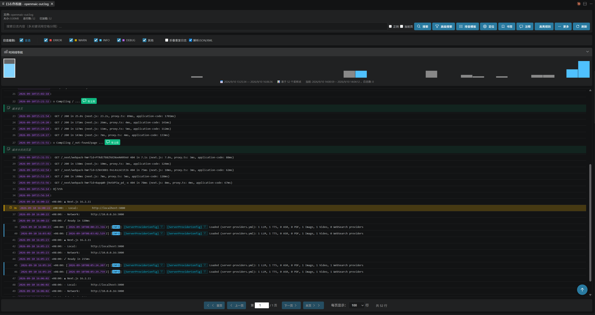
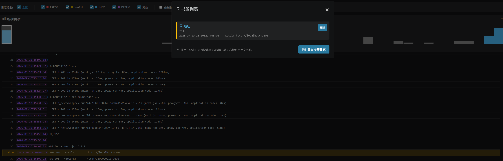
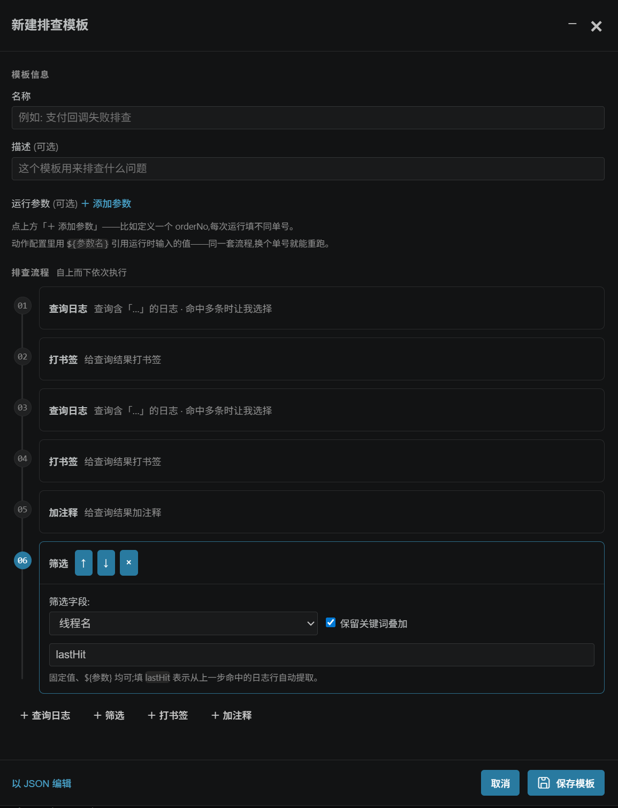
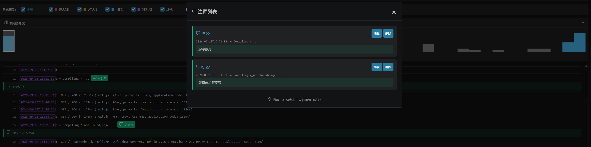

01 · I/O
GB 级文件秒开
文件读取全程流式,不把整个文件读进内存,多 GB 也不会撑爆扩展进程。 虚拟滚动只渲染屏幕内的行,加载有真实进度(百分比、已读行数、当前阶段),不是转圈假动画。 每页显示行数 50 到 1000 行可调。
- 多文件同时打开,各占独立面板,状态互不干扰
- 加载失败 / 编码异常时给出明确错误
VSCode 扩展。把几 GB 的服务器日志从「打不开」变成「可排查」 — 流式读取、虚拟滚动,关键词 / 线程 / 类 / 级别叠加过滤, 时间线导航,书签注释,可一键重跑的排查模板。
code --install-extension wake.big-log-viewer

线上问题排查要翻的服务器日志,经常几百 MB 起步,几个 GB 不稀奇。 VSCode 默认打开 1 GB 以上的文件就废 — 全量读入内存,打开慢、滚动卡顿、搜索要等几分钟,跳不到想去的行。
Big Log Viewer 接管这件事:文件按流式读取,内存里只保留当前需要的数据, 配合虚拟滚动把 GB 级文件压到秒开,边滚边加载,搜索 / 过滤 / 跳转都跟着节点来。 排查要用的工具它也配齐了 — 多关键词搜索、级别 / 线程 / 时间过滤、时间线、书签 / 注释,还有把固定流程存成一键重跑的排查模板。
标注数据存在用户级存储,排查模板分享走剪贴板或 JSON,全程不依赖工作区。

文件读取全程流式,不把整个文件读进内存,多 GB 也不会撑爆扩展进程。 虚拟滚动只渲染屏幕内的行,加载有真实进度(百分比、已读行数、当前阶段),不是转圈假动画。 每页显示行数 50 到 1000 行可调。
搜索框支持多关键词,空格分隔即 AND 匹配,比如 error timeout 只命中两个词同时出现的行。
勾选「正则」切正则模式,勾「当前页」只在当前显示的页内定位。
高级搜索是查询构建器:每行一个条件(关键词 / 线程名 / 类名 / 方法名 / 级别 / 时间范围), 行间「且/或」芯片切换整体逻辑,底部实时预览这次查询会做什么。 所有条件叠加,「取消筛选」一键清空。
把整个文件按时间采样画成分布图,点哪跳到哪,当前浏览位置高亮跟着走, 随时知道自己在哪个时间段。采样密度可在设置里调(默认 200,范围 20 – 1000)。
固定排查流程存成模板,自动重跑,换个订单号或 traceId 就能复用。 四种动作自由编排:查询日志、筛选、打书签、加注释, 动作间自动传上下文(比如从命中行提取线程名接着筛)。

双击日志行加书签,右键命名(留空默认「行 N」);注释从右键菜单发起,列表集中管理。 内置 ERROR / WARN / INFO / DEBUG、时间戳、线程名高亮规则,也支持自定义正则规则。

查看器本身是通用文本查看器,任何 .log / .txt 都能打开、搜索、加书签。
在此基础上自动识别时间戳和日志级别
(归一化到 ERROR / WARN / INFO / DEBUG 四档,FATAL、SEVERE 计入 ERROR,TRACE、VERBOSE 计入 DEBUG)。
下表是常见日志组件默认 / 典型输出的实测情况。
| 日志组件 | 时间戳 | 级别 |
|---|---|---|
| Logback / Log4j / Log4j2 / SLF4J、Spring Boot 默认格式 | 识别 | 识别 |
| log4net / NLog(.NET) | 识别 | 识别 |
Python logging(%(asctime)s 格式)、Gunicorn | 识别 | 识别 |
| logrus、zap 控制台格式(Go) | 识别 | 识别 |
| Rails、Laravel / Monolog、winston 文本格式 | 识别 | 识别 |
| Go 标准库 log、IIS W3C、syslog RFC5424 | 识别 | — |
| Docker json-file、bunyan(JSON 内含 ISO 时间字段) | 识别 | — |
| Tomcat catalina(JUL)、JBoss / WildFly 默认 pattern | — | 识别 |
| Serilog Console 默认、Apache error log | — | 识别 |
Python logging 默认格式、uvicorn(INFO: 前缀) | — | 识别 |
nginx / Apache access log(01/Jan/2024 英文月份日期) | — | — |
识别不到时间戳只影响时间范围过滤、时间线、按时间裁剪这三类功能,打开、搜索、级别过滤、书签、注释全部照常可用。
级别简写 E / W / I / D、ERR / WRN / INF / DBG / TRC 默认就能识别;
如果你们的日志用了别的缩写,在设置里配级别别名即可。
在「⋯ 更多 → 设置」面板里切换,立即生效,选择会写入 VSCode 用户配置。
所有功能都可从 VSCode 命令面板(Ctrl+Shift+P)调用。
日志查看器: 打开大日志文件日志查看器: 高级搜索日志查看器: 排查模板日志查看器: 书签管理日志查看器: 注释管理日志查看器: 跳转到行号日志查看器: 显示日志统计日志查看器: 刷新日志文件日志查看器: 按时间删除日志日志查看器: 按行数删除日志要求:VSCode 1.75 或更高版本。
在扩展面板搜索「Big Log Viewer」或「大日志文件查看器」,或直接执行:
code --install-extension wake.big-log-viewer
$ git clone https://github.com/uwakeme/large_log_check.git
$ cd large_log_check
$ npm install
$ npm run package打包在项目根目录生成 .vsix,在扩展面板「⋯ → 从 VSIX 安装」里选它即可。
资源管理器里右键任意 .log / .txt 文件,选「打开大日志文件」。
进度条走完就是完整日志。每个文件在独立面板中打开,书签、注释、搜索状态都按面板隔离,关闭面板即释放资源。